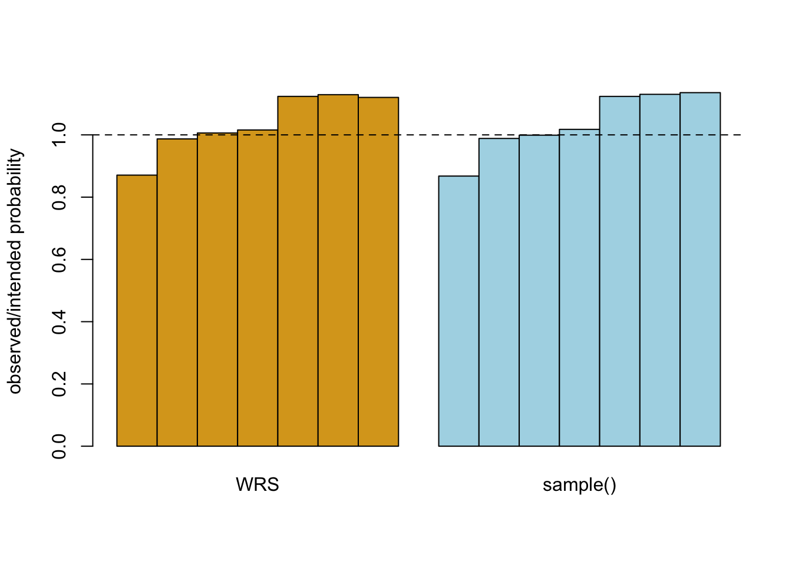

One of the projects from the R Spring and R Dev Day has been to add unequal sampling without replacement with specified marginal sampling probabilities to R’s sample(). What R currently has is sequential sampling: if you give it a set of priorities \(w\) it will sample an element with probability proportional to \(w\) from the population, remove it from the population, then sample with probability proportional to \(w\) from the remaining elements, and so on. This is useful, but a lot of people don’t realise that the probability of element \(i\) being sampled is not proportional to \(w_i\).
It’s surprisingly hard to produce without-replacement sampling algorithms where the marginal sampling probabilities do match a supplied vector. For a start, it’s not always possible to just rescale a set of supplied numbers: if you are sampling \(n\) items with probability proportional to \(x\), then \(nx_i/\sum_i x_i\), the desired sampling probability, can’t be greater than 1. The problem gets more complicated when you also say that you want all the pairwise sampling probabilities to be non-zero, and yet more complicated when you worry about numerical stability and speed for large \(n\).
We do, however, have a plan: using Brewer’s (1975) algorithm. We will, of course, leave in place the current sequential sampling algorithm, and maybe also add a Bernoulli sampling algorithm that samples observations independently with the specified probability, giving without-replacement sampling with the specified probabilities rapidly but with a random, rather than fixed, sample size. Ahmadou Dicko has written code for this; the main problem in putting it into R at the R Dev Day was that sample() is in base (rather than, say, stats) and so handles C code lookup differently. There are also some changes to be made to the code organisation. But we’re getting there.
Anyway, that was a lead-in to people being wrong on the internet about another sampling algorithm. There’s a popular algorithm for weighted reservoir sampling, due to Efraimidis and Spirakis. If you want to sample \(n\) observations without replacment with weights \(w_i\) you generate \(N\) uniform numbers \(u_i\sim U[0,1]\) and take the \(n\) observations with the largest values of \(u_i^{1/w_i}\) (or, equivalently but slightly more stably1, the largest values of \(\log(1-u_i)/w_i\)).
This algorithm was presented by the original authors not just as a way to do weighted sampling without replacement, but as an algorithm that can be adapted to run in a single pass over the data and so can be run on data streams – the first such algorithm to be described! Importantly, they didn’t say that it samples with probability proportional to the weight; they explicitly say2 that the probability for the \(i\)th selection is proportional to \(w_i\) over the items that haven’t already been sampled. That is, it’s an algorithm for implementing the same sequential sampling that we have in R, only with the ability to run on streaming data.
Here’s an example of the Efraimidis and Spirakis algorithm and the R sample algorithm
size<-c(3,2.1,2,1.9,1,1,1)
nsize<-length(size)
id<-letters[1:nsize]
r<-replicate(100000,{
u<-runif(nsize)
uw<- u^(1/size)
id[order(-uw)][1:3]
})
s<-replicate(100000,{
sample(id,size=3,replace=FALSE,prob=size)
})
table(r)## r
## a b c d e f g
## 65305 51818 50302 48248 28090 28229 28008table(s)## s
## a b c d e f g
## 65075 51897 49952 48341 28089 28256 28390table(r)/size## r
## a b c d e f g
## 21768.33 24675.24 25151.00 25393.68 28090.00 28229.00 28008.00table(s)/size## s
## a b c d e f g
## 21691.67 24712.86 24976.00 25442.63 28089.00 28256.00 28390.00table(r)/table(s)## r
## a b c d e f g
## 1.0035344 0.9984778 1.0070067 0.9980762 1.0000356 0.9990445 0.9865446As you can see, the two algorithms produce very similar marginal sampling probabilities, and these are not proportional to the weight variable size

It looks as though the weighted reservoir sampling algorithm was intended for settings where the sample is much smaller than the data stream, so the marginal sampling probabilities it gives will not be far from proportional to the specified weights. The differences can be important for other applications.
Tom Moertel notes that, first, the logarithm stops \(u^{1/w}\) underflowing, and second, standard pseudo-random generators actually sample from \([0,1)\), so 0 is possible (bad!) and 1 isn’t↩︎
on the first column of the first page in the first equation↩︎